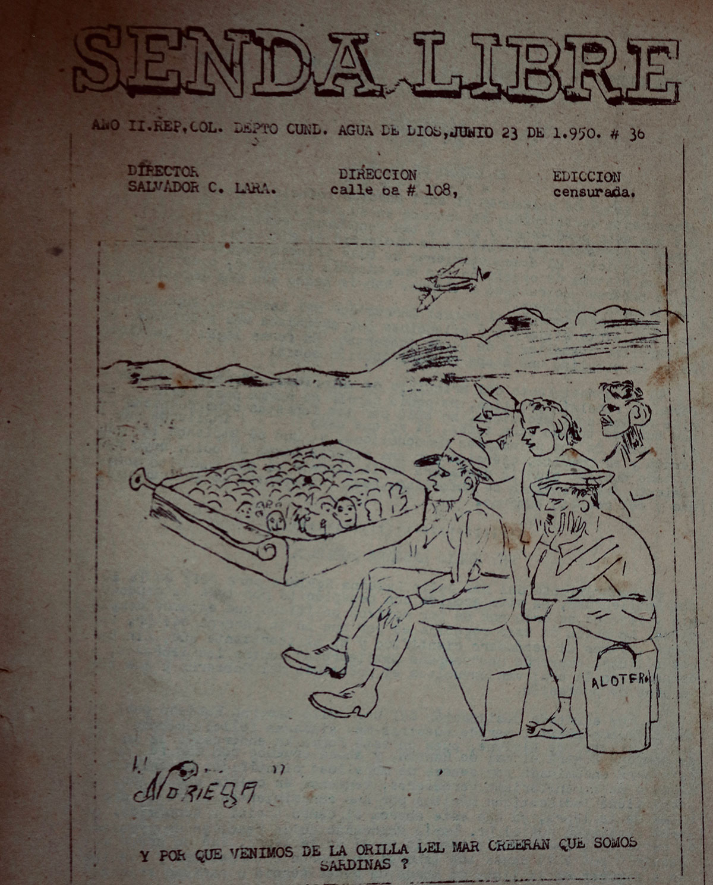

Quien llega a Agua de Dios tiene la idea y sensación de ver por todos los rincones del lugar a personas desbaratadas, deformadas o amputadas por la misma historia que dio origen al surgimiento del municipio. Sin embargo, una vez se llega al lugar, el ambiente es diferente cuando luego de la multitud que circula sin orden alguno, la precensia del enfermo se dificulta tras recorrer el municipio y observar entre el disimulo, que no llevan la secuela de la enfermedad. Ellos, con lupa en mano y pasos lentos se encuentran a puerta cerrada, descansando del bullicio que los invisibiliza de los demás.
“Bienvenida al albergue San Vicente” es la carta de presentación que, con entusiasmo y luego del protocolo necesario, se ingresa al lugar que refugia a mujeres huérfanas y olvidadas que dieron forma al hoy municipio, un 7 de agosto de 1870. Uno de los tres albergues que existe en Agua de Dios y por lo tanto, se encuentra a metros de distancia de la vida pública de la ciudad.
Llegar al albergue, es de fácil identificación para el ojo del espectador, si relaciona las rejas azules, las paredes blancas, la cruz como símbolo médico y el nombre del refugio que, luego de la cercanía y la cordialidad de quien atiende al ser ajeno en la tierra no escuchada, se agudiza la vista y se observa desde lejos el vaíven de enfermeras como única figura pública. Ingresar allí, es conocer las historias de mujeres que han sido refugiadas desde años atrás y recorrer los terrenos empolvados, abandonados y fantasmales que, llamados hoy en día como reliquias históricas, fueron para los años 1900 en adelante, los ladrillos y el concreto que recluyó la vida de quien nació sin derechos.
Como lo son, las esculturas religiosas, las antiguas habitaciones o prisiones de acero, las cocinas de concreto, los baños destapados y los techos destechados que junto a la maleza mal cultivada; no logra ocultar el camino marcado cuando para la historia, es la vida no contada que aún niega a desvanecer el moho presente en el material que no desaparece. Pero, si se retroceden los pasos y se llega a la puerta principal del albergue; las mujeres que habitan allí, son la prueba reina de la historia que marcó su piel.
Patrimonio histórico del antiguo lazareto de Agua de Dios, Albergue San Vicente.
Como es el caso de Aceneida García la mujer de 59 años que, al dejar su tierra en Pereira, Risaralda, en el año 2012; se mudó a Agua de Dios una vez, se dio cuenta de que su transformación física incrementaba al mismo tiempo que se observaba en frente de un espejo. Ya que un día, luego de las constantes intervenciones médicas y el tiempo que no le daba solución; un internista la llevó a encontrar la respuesta que no quería escuchar , comenta para luego de varios segundos, limpiar sus lágrimas y dirigirse hacía su habitación donde guarda en un cofre, las fotografías que no borran el físico que perdió
Así como ella, otras mujeres guardan en silencio el dolor que causó el miedo de la enfermedad al encontrarse la mayoría, en el gran salón de descanso junto a una radio encendida que armoniza el espacio, unas sillas plásticas que permite el descanso de quien se asome, unas mesas ubicadas ordenadamente que se convierte en el soporte de las manualidades artísticas y unos dos televisores en cada costado que entretiene la mente del ser solitario. Allí, mientras se recorre por el salón amplio y armonioso; la silueta de mujeres sobresale tras el desfile desnudo de las secuelas de la lepra. “Buenos días, ¿Se le ofrece un vaso con agua o tinto?” es la pregunta que, aparte de romper el hielo de la desconfianza, fue el puente invisible que ayudó a conocer la historia de la discriminación que surgió desde los primeros años del siglo XIX.
Entre ellas, se encuentra Esther Balaguera, la mujer de Duitama, Boyacá que, al llegar a Agua de Dios a una edad inocente en compañía de sus tíos maternos, estuvo internada en el convento de monjas para quedarse allí hasta el día de hoy . Su historia empieza a relucir luego de encontrar un espacio solitario donde su voz tosca no se escuchará ni tampoco fuese interumpida por las demás, al tener como de costumbre, agachar la mirada y jugar con la toalla que carga siempre en su hombro para espantar cuanta mosca se posa sobre la herida de su pierna.
Esther a pesar de ser una de las mujeres que lleva viviendo en el albergue más de 30 años desde que fue desterrada de su tierra, no olvida tampoco el dolor que sintió cuando fue separada de su familia . Ella, fue una de las mujeres que cruzó el puente de Los Suspiros más conocido como el camino hacía el abandono, la exclusión y el adíos eterno tras ser desde luego, la primera infraestructura colgante construida en Colombia en el año 1862.
Estas historias femeninas no fueron las únicas que se escucharon y conocieron, también las masculinas ya que si se visitan los otros dos albergues restantes (Boyacá y Ospina Pérez), el desasosiego continua. Ingresar allí, es tener en mente no solo las mismas características físicas que se delatan en su fachada sino también, la división de zonas (dependiente e independiente) que logran diferenciarse mientras se pasea por el desfile de vendajes, amputaciones, camillas, sillas de ruedas, caminadores y prótesis. “La diferencia de estas dos zonas se basa en la independencia que tienen ellos sobre su cuerpo, en que son capaces de valerse por si mismos y no necesitan una atención permanente que los ayude en sus necesidades”, explica una de las enfermeras.
Entre ese recorrido sin guía que oriente al turista, se adentra y se conoce no solo la zona dependiente caracterizada por habitaciones amplias donde hay espacio para seis camas, neveras, armarios, televisores y baños para compartir, sino que también, está la zona donde reina la privacidad e intimidad por ser un espacio minúsculo que, al tener en su interior todos los objetos mencionados, más una estufa eléctrica como su atracción; tiene un peculiar ingreso si se interesa conocer su interior. Pues al cruzar la puerta de madera se adentra también, al espacio reducido y moldeado para solo una persona donde dos, ya hace pensar en el juego del Tetris tras tener que reacomodar de manera consecutiva los objetos que son tropezados.
Allí, mientras se recorre y se conoce sin interés alguno las instalaciones del albergue, Manuel Antonio Ruiz Cueto es el primer paciente en asomarse y acercarse junto a su silla de ruedas, una toalla en su hombro y una gorra que protege su rostro y ojo afectado que le dificulta la visión. Él, es el hombre costeño más longevo del albergue Boyacá no solo por tener 90 años de vida sino, por llevar en el albergue más de 40 tras ingresar desde el año 1950.
Foto: Periódico Senda Libre, 1950. Archivo histórico - Edificio Carrasquilla, Agua de Dios.
“Llegué a Agua de Dios el 26 de mayo de 1950, junto a otras 450 personas desde el antiguo lazareto de Caño de Loro, Tierra Bomba”,dice con orgullo y risa jocosa que hacen delatar el asombro de su larga vida en el municipio. Su llegada a Agua de Dios, fue según su relato, debido a la intervención de las Fuerzas Aéreas del país al realizar un bombardeo en el antiguo lazareto de Caño de Loro por las malas condiciones sanitarias en que se encontraba el lugar.
Ese lazareto fue el primero en construirse y, en el que aún se encuentran con vida cuatro pacientes más, gracias a la alimentación que allá les brindaban. “En el Caño nos alimentaban con puro marisco y usted sabe que eso contiene una gran cantidad de fósforo y eso es lo que me prolongó la vida”, afirma.
Pero para entrar más en detalle sobre su vida y llegada al antiguo lazareto de Agua de Dios, Manuel a una velocidad moderada por la que se transporta en su silla de ruedas, encuentra un espacio ruidoso que ayuda a esfumar su voz. La enfermedad aparte de ser descubierta a temprana edad, fue también, la misma enfermedad que su padre y abuelo padecieron.
En tren llegaban enfermos al lazareto de Agua de Dios.
Una decisión rotunda por parte de los médicos de la época que para su momento, tenían el mismo poder de señalar y enviar a los enfermos al territorio del olvido. Pues el enfermo sin haber tenido la intención de robar la enfermedad, era tratado como aquel delincuente que interrumpía la tranquilidad de los demás, al escuchar por parte de Jaime Molina periodista independiente y testigo de la enfermedad en primera persona que, los médicos tenían la obligación de romper el juramento de hipócrates.
Esa fue la vida de los pacientes de Hansen que, al llegar de manera inocente al consultorio médico, recibían por parte de él, una orden de captura como el medicamneto que curaba la enfermeddad.
{kind=link}
{kind=link}
{kind=link}
{kind=link}
{kind=link}